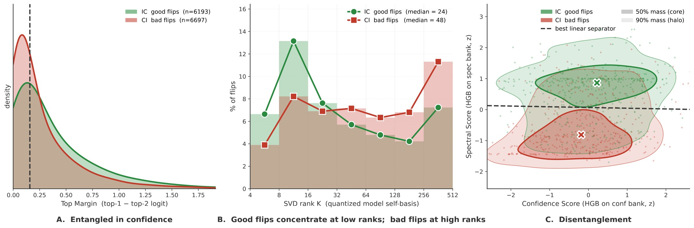
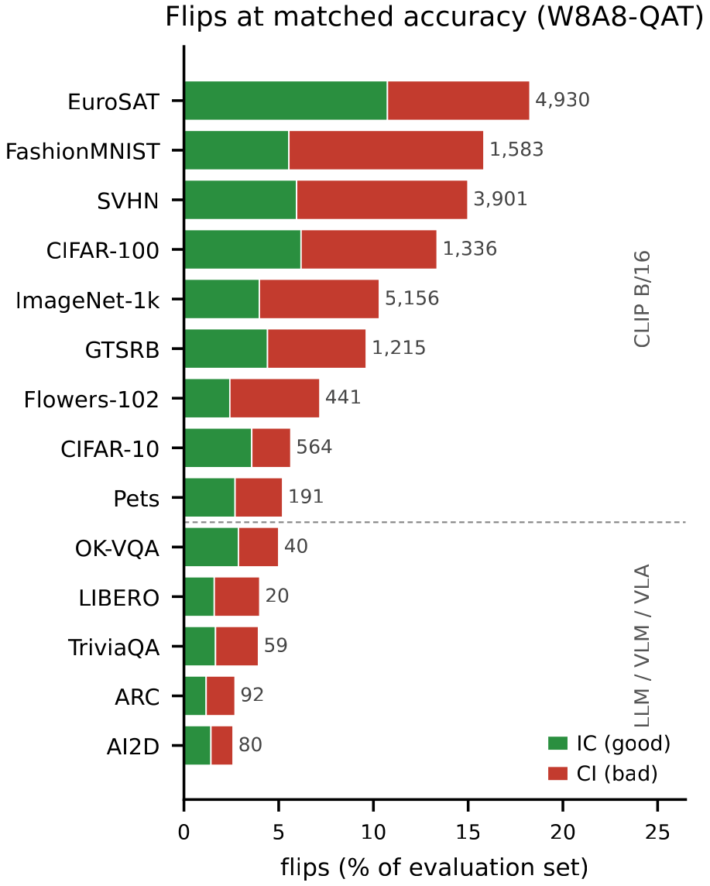
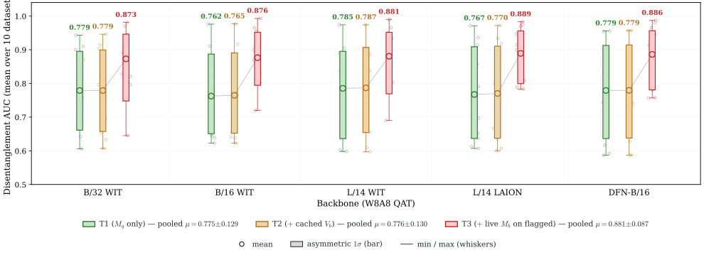
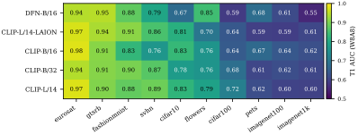

Advances in Neural Information Processing Systems
Disentangling the Good From the Bad:
Quantization‑Induced Flips Are Not Random
Université Paris-Saclay, CEA-List

A quantized model that matches its full-precision baseline in accuracy still changes many of its predictions. These flips are not rounding noise: good flips (incorrect → correct) and bad flips (correct → incorrect) live in different parts of the quantized model's SVD spectrum. A post-hoc gate that reads them can keep the good flips and repair the bad ones, recovering accuracy at a cost of microseconds per input.
Model quantization has advanced tremendously in recent years, producing models that require a fraction of the compute while maintaining baseline accuracy and creating the illusion of lossless compression. Beneath the surface, however, model behavior undergoes severe shifts that simple global accuracy fails to capture. Notably, quantized models experience a high rate of “flips”: individual predictions that change from correct to incorrect (bad flips-CI) and vice versa (good flips-IC). Although overall accuracy remains stable, these changes degrade model reliability and introduce unforeseen safety risks. Current literature largely attributes these flips to random rounding noise, a perspective that ignores the specific precision constraints imposed by quantization with or without training.
In this paper, we show that flips are driven by quantization's implicit regularization, low-pass filtering, and exacerbated spectral bias. By analyzing these effects via Singular Value Decomposition (SVD), we leverage the model's low-to-high rank internal disagreement to disentangle good flips from bad ones. Building on this insight, we introduce learned post-hoc gates, with or without the full-precision model, to selectively preserve the former while correcting the latter, and we validate our disentanglement through extensive experiments spanning Post-Training Quantization (PTQ) to Quantization-Aware Training (QAT) and across vision, language, and multi-modal models. With this work, we aim not only to restore the quantized model's hidden reliability degradation but also to elevate it beyond the accuracy ceiling of its full-precision counterpart.
Matched accuracy still changes many predictions
When a quantized model matches its baseline's top-1 accuracy, the two are treated as equivalent. They are not: at matched accuracy, the quantized model still disagrees with its baseline on a share of inputs. Good and bad flips are roughly symmetric in count, which is exactly why the aggregate accuracy gap looks small or even null.
The quantized model's own confidence does not tell them apart: their densities overlap across the whole confidence range. Without a per-input criterion, a deployed model cannot flag the bad flips that matter, such as a missed pedestrian or a corrupted instruction.
The spectral account explains the asymmetry. Rounding error concentrates in the high-rank, low-variance directions of the representation, which carry fine within-class cues. A good flip is an input where the baseline followed a misleading high-rank cue that quantization removed; a bad flip is one whose correct evidence lived in that tail and was crushed by rounding.

Read where each prediction emerges, then gate
The active basis Vq is the SVD of the quantized model's own features, fitted without labels and without the full-precision model. For each input, rank-K reconstructions of its feature are pushed through the classifier head on a grid of ranks: the readouts trace, rank by rank, where the quantized prediction emerges. Together with the softmax statistics they form the feature bank of a gradient-boosted head fitted once with labels on a calibration pool. The deployed gate flags the inputs most likely to be bad flips and repairs only those.

| Configuration | Gate features | Repair of flagged inputs | Mb forwards / input |
|---|---|---|---|
| T1 | Mq only (Vq readouts, pq) | second-best class of pq | 0 |
| T2 | T1 + cached Vb | second-best class of pq | 0 |
| T3 | T1/T2 gate, then live Mb on its top-r% | ŷb (T3 head picks) | r |
| T3 detection | T2, then Mb on the top-r% | — | r |
r: flag rate. The second-best class of pq equals the label for about three quarters of bad flips and essentially no good flips, so a flagged input can be repaired without a full-precision pass. The T1 / T2 gate adds 0.045–0.053% of a quantized forward in compute (mean over the 50 CLIP cells); T1 uses the quantized model only.
The signal holds across 50 CLIP cells and five more families
Dis AUC is the ROC-AUC separating good from bad flips among the flipped inputs. On five CLIP backbones × ten datasets at matched-accuracy W8A8, T3 sits between 0.87 and 0.89 for every backbone, with the strongest cell at B/16 / EuroSAT (0.993). The ordering T1 < T2 ≤ T3 holds on every family tested.

| Family | # | T1 | T2 | T3 |
|---|---|---|---|---|
| VLMs (5 × CLIP) | 50 | 0.775 | 0.776 | 0.881 |
| Generative VLMs | 4 | 0.924 | 0.923 | 0.934 |
| ViT-B/16 | 3 | 0.802 | 0.802 | 0.828 |
| CNN ResNet-50 | 3 | 0.683 | 0.692 | 0.707 |
| LLMs | 6 | 0.843 | 0.842 | 0.856 |
Family-averaged Dis AUC; # = number of (model, dataset) cells.
Detection comes first
Deployment also needs to find the flips against a low base rate (8.7% of 47,636 inputs). The Mq-only gate reaches PR-AUC 0.535, 6.1× the prior, at under 0.1% overhead; spending a full-precision pass on the top 10% flagged inputs lifts it to 0.851, and the top 20% to 0.958.
Class density caps T1, softly
Low-class datasets (EuroSAT, GTSRB, FashionMNIST, SVHN) form a bright band at 0.76–0.98, while ImageNet-1k caps T1 at 0.59–0.62: with 1,000 classes in a fixed feature space, quantized-model-only features can no longer tell which low-rank reconstruction matches which class. A live Mb pass on flagged inputs (T3) lifts ImageNet-1k from 0.60 to 0.79, and tighter precision lifts it too, to 0.829 / 0.847 at W4A4 (ResNet-50 / ViT-B/16).

| Backbone | T1 W8A8 | T3 W8A8 | T1 W6A8 | T3 W6A8 |
|---|---|---|---|---|
| CLIP-B/32 WIT | 0.779 | 0.873 | 0.761 | 0.879 |
| CLIP-B/16 WIT | 0.762 | 0.876 | 0.770 | 0.883 |
| CLIP-L/14 WIT | 0.785 | 0.880 | 0.769 | 0.879 |
| CLIP-L/14 LAION-2B | 0.767 | 0.889 | 0.772 | 0.884 |
| DFN-B/16 | 0.779 | 0.886 | 0.766 | 0.882 |
Mean Dis AUC over the ten datasets of each backbone (upgraded bank).
Keep the good flips, repair the bad ones
Two heads flag the inputs most likely to be bad flips (a flip, and a bad one); each tier repairs them from its cheapest source. On the 50 CLIP cells (5 backbones × 10 datasets, W8A8 light QAT), T1 gains +1.97 pp with the quantized model alone and ends +0.86 pp above full precision. T3 runs the full-precision model only on the flagged inputs and climbs with that budget.
| T1 | T2 | T3 r=1% | T3 r=5% | T3 r=10% | T3 r=17% | T3 r=20% | T3 r=50% | T3 r=70% | Oracle | |
|---|---|---|---|---|---|---|---|---|---|---|
| Repair | 2nd-best | 2nd-best | ŷb | ŷb | ŷb | ŷb | ŷb | ŷb | ŷb | ŷb |
| Top-1 accuracy gain (pp) | ||||||||||
| above the quantized model | +1.97 | +2.03 | +2.11 | +2.44 | +2.77 | +3.10 | +3.19 | +3.70 | +3.74 | +4.83 |
| above the base model (FP) | +0.86 | +0.92 | +1.01 | +1.33 | +1.66 | +1.99 | +2.08 | +2.59 | +2.64 | +3.72 |
| Compute overhead (% of Mq) | 0.045 | 0.053 | 1 | 5 | 10 | 17 | 20 | 50 | 70 | 4.8 |
Mean over the 50 cells. T1 / T2 never run the full-precision model; T3 runs it only on the r% of inputs the T1/T2 gate flags. Each gain takes the best flag rate on the evaluated cells, an upper estimate for a deployment that fixes r in advance. Compute overhead: FLOPs as a percentage of one quantized forward; for T1 / T2, the feature bank and both heads (at most 0.57%, on B/32 ImageNet-1k).
The gain grows with the damage the quantizer leaves
The same T1 gate, quantized model only, on CLIP-B/16 cells from matched W8A8 to lossy W6A6.
| Cell | Δacc | Good kept | Bad left | T1 gain (pp) |
|---|---|---|---|---|
| GTSRB W8A8 (matched) | +0.39 | 187 (222) | 113 (173) | +1.13 ± 0.07 |
| FashionMNIST W8A8 | −2.21 | 73 (154) | 74 (375) | +5.16 ± 0.04 |
| EuroSAT W6A6 | −4.48 | 1,292 (1,474) | 1,351 (2,146) | +6.38 ± 0.05 |
| SVHN W6A6 | −16.24 | 836 (1,105) | 2,455 (3,541) | +7.66 ± 0.09 |
CLIP-B/16, min–max PTQ. Good / Bad: good flips kept and bad flips left after the gate (before it in parentheses). Gain: best flag rate, mean ± sd over 3 seeds.
Every production quantizer gains
The pipeline on production quantizers: GPTQ, SmoothQuant, AWQ and the stock recipes of NVIDIA TensorRT Model Optimizer for zero-shot CLIP on GTSRB, plus quantized LLMs and VLMs (QAT, bitsandbytes-INT8, TensorRT). With a 2–5 pp drop, T1 recovers 2.9–3.6 pp and T3, which runs the full-precision model on 20% of the inputs, 5.2–6.3 pp, ending up to 3.4 pp above full precision.
| Model | Data / Quant | Quant. loss Δ (pp) | Flips after (before) | PR-AUC (random) | Dis AUC | Gain (pp) | |||
|---|---|---|---|---|---|---|---|---|---|
| Good | Bad | T1 | T3 | T1 | T3 | ||||
| (a) Little or no damage on CLIP / GTSRB (|Δ| < 1 pp) | |||||||||
| CLIP-B/32 | GPTQ W8A8 | +0.07 | 406 (459) | 210 (450) | 0.638 (0.228) | 0.768 | 0.896 | +2.28 | +2.79 |
| CLIP-B/32 | TRT INT4-AWQ | −0.32 | 321 (337) | 191 (350) | 0.872 (0.530) | 0.750 | 0.917 | +1.57 | +3.93 |
| CLIP-B/32 | TRT INT8-SQ | −0.02 | 149 (171) | 94 (172) | 0.718 (0.276) | 0.694 | 0.828 | +1.57 | +2.22 |
| CLIP-B/32 | SmoothQ W8A8 | +0.02 | 231 (298) | 140 (296) | 0.543 (0.152) | 0.754 | 0.856 | +1.43 | +1.97 |
| CLIP-B/32 | AWQ W8 | −0.02 | 212 (252) | 124 (254) | 0.518 (0.127) | 0.764 | 0.851 | +1.36 | +1.62 |
| (b) CLIP / GTSRB deployment with a 2–5 pp drop | |||||||||
| CLIP-L/14 | TRT INT4-WO | −4.10 | 142 (182) | 151 (346) | 0.693 (0.325) | 0.737 | 0.908 | +3.58 | +5.25 |
| CLIP-L/14 | TRT INT8 | −2.88 | 340 (361) | 217 (476) | 0.820 (0.472) | 0.760 | 0.940 | +3.48 | +6.30 |
| CLIP-B/32 | AWQ W6 | −2.94 | 637 (754) | 441 (1,125) | 0.854 (0.474) | 0.788 | 0.941 | +2.86 | +5.57 |
| (c) Cross-architecture deployment | |||||||||
| LLaVA-1.5-7B | EuroSAT / bnb-INT8 | −3.72 | 271 (326) | 70 (1,069) | 0.703 (0.135) | 0.939 | 0.971 | +4.41 | +4.83 |
| Qwen2.5-1.5B | AG News / W8A8 QAT | −2.07 | 221 (253) | 25 (667) | 0.643 (0.050) | 0.960 | 0.965 | +3.04 | +3.08 |
| Qwen2-VL-2B | CIFAR-10 / TRT INT8 | −4.53 | 6 (57) | 5 (510) | 0.880 (0.067) | 0.779 | 0.911 | +2.93 | +4.59 |
| Qwen2.5-VL-3B | EuroSAT / bnb-INT8 | −2.68 | 142 (179) | 90 (715) | 0.736 (0.096) | 0.870 | 0.936 | +2.52 | +2.95 |
| Qwen2.5-VL-3B | EuroSAT / W8A8 QAT | −2.40 | 104 (129) | 90 (610) | 0.696 (0.083) | 0.858 | 0.929 | +2.28 | +2.48 |
Δ: quantized minus full-precision accuracy; green: the pipeline ends above the full-precision model. T1: quantized model only, flagged inputs repaired with the second-best class. T3: T1, plus the full-precision model on the 20% of inputs the T1 gate scores highest. LLaVA and Qwen2.5 rows: only the gain on flipped inputs is counted. All gains are significant (p < 5×10−4, bootstrap). TRT: NVIDIA TensorRT Model Optimizer stock recipe (simulated quantization; SQ: SmoothQuant, WO: weight-only).
Spectral, not confidence; quantization, not generic noise
The spectral account makes falsifiable predictions, and each is tested: the bank must beat the quantized softmax confidence; the raw features must not explain it away; quantization drift must be more separable than matched-accuracy noise; and tighter precision must sharpen the asymmetry.
Confidence vs raw features vs spectral bank
| Features | 12 QAT / PTQ cells | 12 rotation cells |
|---|---|---|
| Confidence | 0.626 | 0.614 |
| Raw fq | 0.808 | 0.736 |
| Spectral | 0.838 | 0.801 |
Mean Dis AUC, CLIP-B/16. Left: QAT W8A8, PTQ W6A6, QAT W6A6 × four datasets; the spectral bank beats confidence on all 12 cells and raw features on 10. Right: min–max RTN, QuaRot + GPTQ, SpinQuant + GPTQ at W8A8 × four datasets, HGB head, 10 seeds. The SVD adds no information: it re-expresses fq along the model's own principal directions.
Quantization is not generic noise
| Cell | QAT | PTQ | DropBlock | Gauss. | Dropout |
|---|---|---|---|---|---|
| R-50 / GTSRB | .949 | .772 | .500* | .795 | .579 |
| R-50 / C-100 | .671 | .647 | .589 | .605 | .595 |
| ViT / GTSRB | .874 | .900 | .823 | .583 | .540 |
| CLIP / C-10 | .787 | .778 | .684 | .787 | .727 |
| Average | .820 | .774 | .649 | .693 | .610 |
Matched-accuracy Dis AUC when the quantizer is replaced by a regularizer of comparable severity.
Tighter precision sharpens the asymmetry
| Model | W8A8 | W6A6 | W4A4 |
|---|---|---|---|
| CIFAR-100 (100 classes) | |||
| ResNet-50 | 0.582 | 0.596 | 0.636* |
| ViT-B/16 | 0.619 | 0.757 | 0.850* |
| ImageNet-1k (1,000 classes) | |||
| ResNet-50 | 0.575 | 0.629 | 0.829* |
| ViT-B/16 | 0.617 | 0.706 | 0.847* |
T1 Dis AUC; lower precision yields higher Dis AUC in every row. *Accuracy-unmatched. ViT-B/16 on CIFAR-100: PTQ models, scored with an evaluator that also reads full-precision features. ImageNet-1k: upgraded feature bank, on the 40,000 validation images not used by QAT.
Scope
- A supervised gate. The gate is fitted with labels for each (full-precision, quantized) pair; it is not a zero-shot detector, and a head fitted on one dataset loses its gain on another.
- Upper estimates of the gains. The reported gains take the best flag rate on the evaluated cells; a deployment must fix it in advance.
- Class density. At 1,000 classes the quantized-model-only signal is diluted, capping T1 on ImageNet-1k at conservative precisions.
- Cost of T3. T3 keeps the full-precision model available, which suits compute- or energy-bound settings, not memory-bound LLM serving; T1 and T2 carry no such cost.
- Coverage. The densest evidence is the 50-cell CLIP grid; the other families rest on a handful of cells each.
Reproduction code
BibTeX
@inproceedings{bouguerra2026disentangling,
title = {Disentangling the Good From the Bad: Quantization-Induced Flips Are Not Random},
author = {Bouguerra, Aymen and Arnez, Fabio and Gomez-Villa, Alexandra and Mraidha, Chokri},
booktitle = {Advances in Neural Information Processing Systems (NeurIPS)},
year = {2026}
}
Related work
@inproceedings{bouguerra26a,
title = {Less Precise Can Be More Reliable: A Systematic Evaluation
of Quantization's Impact on {VLMs} Beyond Accuracy},
author = {Bouguerra, Aymen and Montoya Vasquez, Daniel Alfonso and Gomez-Villa, Alexandra
and Mraidha, Chokri and Arnez, Fabio},
booktitle = {Proceedings of the 43rd International Conference on Machine Learning},
pages = {9363--9391},
year = {2026},
volume = {306},
series = {Proceedings of Machine Learning Research},
publisher = {PMLR},
url = {https://proceedings.mlr.press/v306/bouguerra26a.html}
}
@inproceedings{bouguerra2026perception,
title = {Quantization and Corruption Robustness in Deployed Road-Scene Perception},
author = {Bouguerra, Aymen and Radermacher, Ansgar and Arnez, Fabio and Mraidha, Chokri},
booktitle = {IEEE International Conference on Vehicular Electronics and Safety (ICVES)},
address = {Cochabamba, Bolivia},
year = {2026}
}